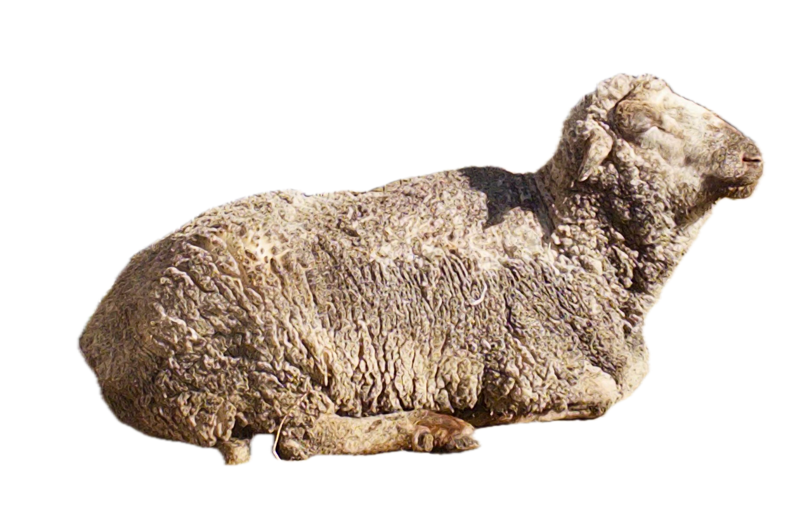

Favorites
- Programming yet another useless-for-my-career pet project which actually makes me love my job in the first place.
- When I cook, and it turns out not only edible but also lowkey Gusteau level of tastyness.
- Maps + mapping.
- Walking through the city while taking pics of incredible design choices.
- Feeling like I can fly after finishing a book.
- All shades of green.
- A Carpet Ride to Khiva by Chris Aslan Alexander
- Collecting trash in my journal.
- Entergalactic (2022).
- Sunflowers and dianthuses.
- Zemfira, Radiohead, Slipknot, Kikagaku Moyo, Daniel Caesar, Hozier, Natalia Lafourcade, black midi, Young Spirit, Alabama Shakes, Deep Purple, Splean, Oasis, Broncho, Kid Cudi, Kanye West, A Tribe Called Quest, Pharell Williams, Cro, SOYUZ, Vicente Fernandez, Black Country New Road.
- Numbness after a hard workout.
- Clean white cool bedsheets after a hot everything shower.
- Kit-Kat, Milka Oreo Edt.
- Budapest, London, Tashkent, New York City.
Wishlist of things
You can buy me presents! All you have to do is pay for it - shipping hurdles and the rest have been already set up in the backend.
Favorite Visuals
